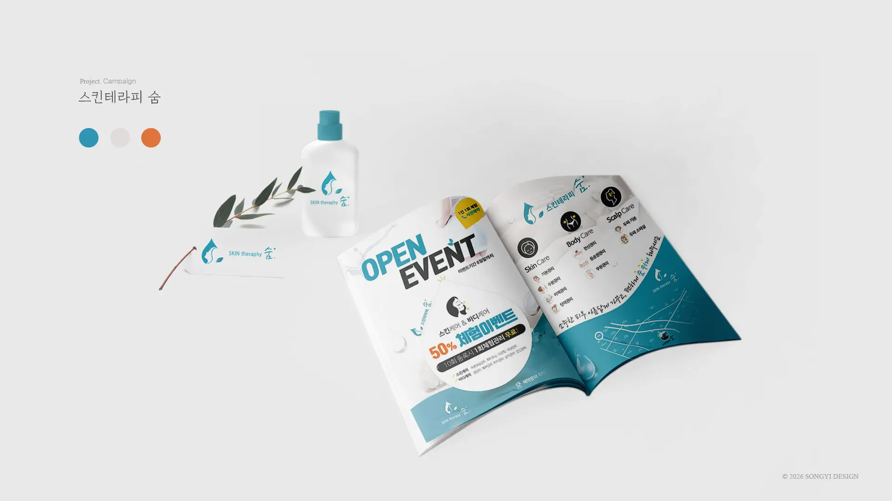

Digital Archive Project

VIEW ARCHIVE →
브랜드가 가진 고유의 감각과 온도를 웹 공간에 온전히 담아내고자 했습니다.
이미지를 클릭하시면 상세 기획안과 결과물을 아카이브에서 확인하실 수 있습니다.
일관된 비주얼 보이스를 통해 대중과 깊게 공감하고 브랜드의 가치를 확산시키는 캠페인 아카이브입니다.

VIEW ARCHIVE →
브랜드가 가진 고유의 감각과 온도를 웹 공간에 온전히 담아내고자 했습니다.
이미지를 클릭하시면 상세 기획안과 결과물을 아카이브에서 확인하실 수 있습니다.